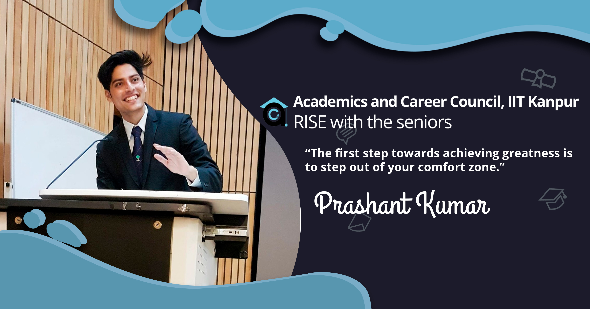
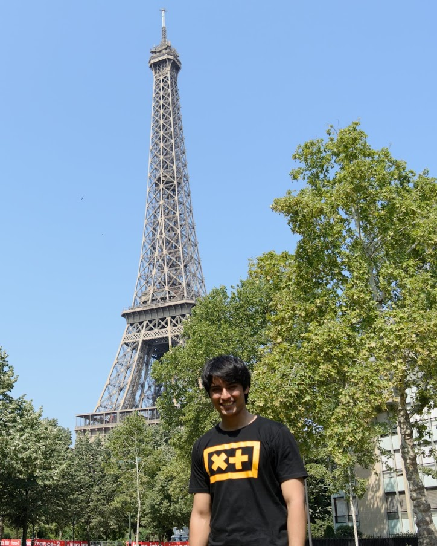
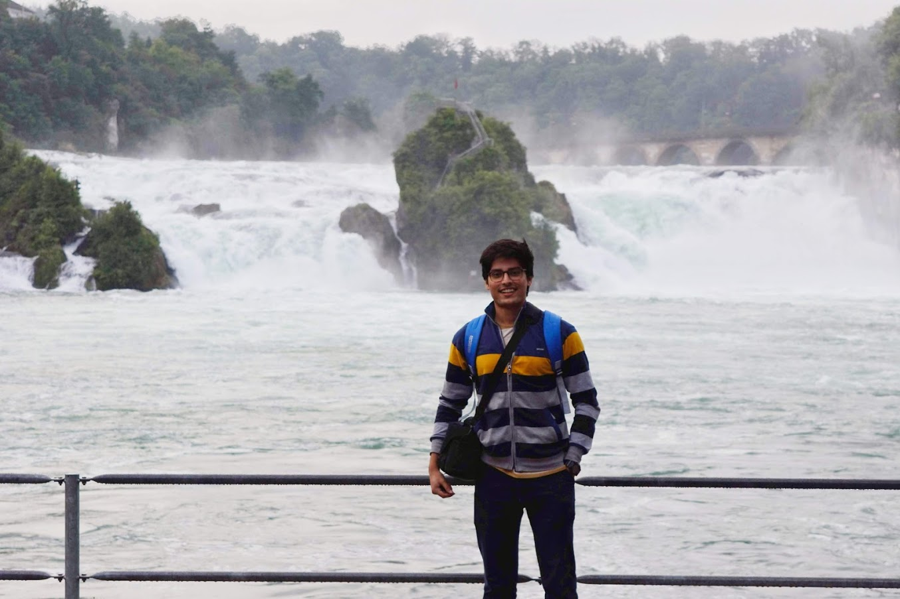
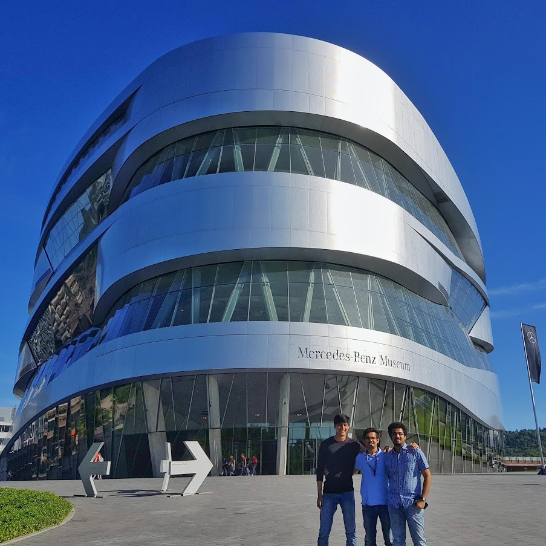

Prashant's Blog
May 04, 2020
Prashant Kumar, a Y15 Dual Degree student from the Economics department shares his
experience about pursuing a research internship at the University of Tuebingen, Germany
which is one of the eleven German Excellence Universities. He elaborates on the decision
making and the work as a research intern and also shares his experience of living in
Germany and traveling through Europe. Do read this to get an insight into the academic
and non-academic aspects of pursuing an internship in Europe!

Research, Germany and Travelling <3
I spent two months of summer’19 at the
University of Tübingen, Germany. Let me share
some insights into what was my motivation behind going for a research internship, how I went
about finding one, and my experience there.

Motivation
Before I begin I would like to disclose that this was my second research intern abroad, the
first one being in summer’18 also in Germany(at a different university). So, I did have an
idea about what a research internship feels like and the challenges that it brings along. I
absolutely loved my experience during my first internship and had developed an interest in
research. So, during my fourth year, I again had to make a decision whether to go for
another research intern or broaden my experience by going for an industrial intern. I took
the easy way out and fired shots both ways, planning to go the way it hit better. However,
my preparation for the industrial internship was half-hearted. But soon I received a
positive reply for the research intern and the choice was clear for me.
This was a great lesson for me in more than one way. You have to be clear about your goals
in the short term. I was not, and almost ended up going nowhere had it not been for luck
being on my side. Research is a big commitment, not something you can survive if you don’t
have the passion for it. A research intern gives you a good idea about what you can expect
further if you want to pursue a Ph.D.
Landing the Internship
The first step was to create a resume. This is the most important part if you have to
increase your odds of landing positive replies from professors. I was told by my professor
later on that I had a well laid out resume and that our research interests intersected and
that’s why he had offered me a position. You have to clearly mention your fields of
interest, the work you have already done, the courses you have undertaken, any other
research experience. The resume has to be elaborate, explaining each and every aspect of
your past efforts.
The next step was to write a cover letter. I cannot stress the importance of a well-written
cover letter enough. This is a good opportunity to improve your writing skills as well, so
it has double the benefit. One important part of the cover letter is to mention how you got
to know about the professor and if there was a publication of his that caught your
attention. Personalizing the cover letter for each professor is beneficial.

Lastly, I had made a list of the candidate professors to whom I would write to. And then, of
course, I started writing to them. Now this stage is purely luck-based. This is not in your
hands, so you should not distress over negative responses or lack of any responses at all.
What you can actually do, is keep doing what you are supposed to do and be patient. I admit
that I was showered with blessings and only in a few emails had I got a positive response.
Eventually, I was offered a paid position and a role as a student assistant in a relatively
newer field of economics. I was to get 750 euros for the two months. This was a bit low, but
I was determined and made up my mind that I would live a frugal life and make myself proud.
Later, in the last week of my internship, I found out that I would actually receive 1500
euros (Woohoo!)
Work
The area of research was a very niche field of economics, which I had been introduced to for
the first time. Lo! it was very intriguing and kept me engrossed. I had to deal with large
amounts of data, some of which had to be web scraped, merged, and cleaned. This was then to
be used for analysis to develop a model that relates alcohol drinking behavior with
emotional cues. I had to go through a lot of research papers( when you go for research, a
lot of reading of literature is constant), derive important results and conclusions, use
them in a way that could be useful in our analysis.
It was interesting and gave a nice outlook on how a Ph.D. student goes about his/her
research. Because of his schedule, my professor could only meet me weekly but was more than
happy to take out time whenever I asked. Being able to work with a professor of such high
caliber and intellect was really uplifting.
Lifestyle and Travel
Having already spent some months in Germany earlier, I had a good idea about the lifestyle
there. Moreover, I had also completed an A1 level German language course taught as the
foreign language program in college, which made it easier to interact with some of the
locals there, navigate my way, buying at the supermarkets, and many other aspects. Living in
Germany helped me test my limits. I followed a well laid out plan, woke up early, went to
the gym, completed my tasks, and always made the most of my time. It is a great opportunity
for networking. I shared my lab with one of the Ph.D. students there and we became the best
friends.

Germans are very hardworking and punctual but one thing which they take very seriously is
the holidays. So, my weekends were all fun-filled and most of them were spent traveling to
new beautiful cities and making friends. People, in general, are more willing to help you
than you think. Always remember, the easiest way to get something is to ask for it. I was
always upfront about my problems in my project with my professor and he was ever ready to
help me out. Europe is an exquisite continent, with beautiful cities. During the last week
of my stay, I went on a solo trip to Prague which was a whole new experience in itself.
Going on a research intern abroad opens you up to the best of both worlds, education, and
travel.
Academics should be the priority and should never be overlooked. Once comfortable with the
acads, you should also have a hobby or two in order for the overall development of your
character and personality. I found mine to be bodybuilding and photography and you should
find yours too. There is so much to do.
Summing Up
“The first step towards achieving greatness is to step out of your comfort zone.” This is my
golden mantra. There is a whole new world waiting to be explored. Never aim for mediocrity.
It was a revolutionizing experience for me. Being able to work under the guidance of an
intellectual, making new friends from different backgrounds, developing an interest in
research, and enjoying it.
-Prashant Kumar
-edited by Aryan Pandeya